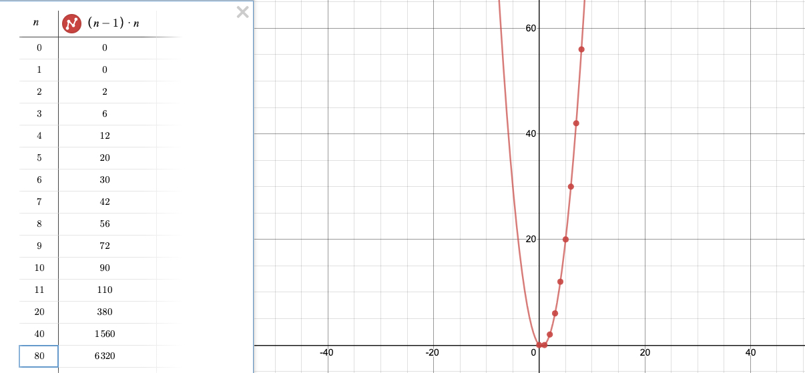

Group Membership Overview
Overview
- Jiffy-generated applications can be deployed as single or multiple instances.
- When running multiple instances of a Jiffy-generated application, a group-membership service establishes connectivity between all running instances.
- An application instance always runs a group-membership service, even when running as a single instance.
- Each application instance running the group-membership service can be thought of as a process.
- At any point in time, the group has an elected leader.
- The group-leader information must be made available via an external persistent store, except in the case of single-instance operation.
- An interface is provided (gmcom.GMLeaderSetterGetter{}) in order to support the passing of implementation-specific persistent store accessors to a starting process. Default implementations to permit access to redis, memcached, stand-alone, and sluggo are provided and are directly supported via configuration in the .xxx.config.json file. The interface can also be used by the implementer to persist the current group-leader information in any other accessible medium (ie. db-of-your-choice). Faster is better here.
- Each process has a uint id (PID) that is assigned by the group-leader upon joining the group.
- Processes join the group by querying the well-known persistent store to obtain the current group-leader information. Once the group-leader is known, the joining instance contacts the leader's address:port and sends a JOIN message. The leader will allocate a new PID for the joining process and send an ACK message in response. The joining process set it's PID based on the PID contained in the ACK message.
- Processes can join and drop out of the group without any changes to the configuration. Group-membership is managed dynamically via inter-process messaging between group-members.
- Each process knows the PID of and maintains a local status of every other process in the group.
- Each process maintains a status-count for every other process in the group.
Notes
I tried a number of different algorithms while writing the group membership / consensus subsystem. The current approach models the Bully algorithm and a little bit of what I remember of the way a large hardware vendor's node-network operated in the early 2000's.
I like the approach I used, as every node is in contact with every other node and consensus tends to be reached quickly. However there are some drawbacks that become clear as the size of the node-network increases.
Lets start with a scenario where a jiffy application has been deployed with two nodes. In this scenario, each instance will ping the other instance with a frequency dictated by the ping_cycle attribute in the .prod.config.json file; each node will ping the other node every n seconds.
Next, lets increase the number of deployed nodes from two to four. Each node will ping each of its colleague nodes once per ping-cycle, which means three pings per node, per ping-cycle with a net ping load of 12.
What does the series of pings per ping-cycle look like as the number of nodes increases?
- 1 node = 0 pings / ping-cycle
- 2 nodes = 1 outbound ping / node / ping-cycle; 2 pings issued by the group
- 3 nodes = 2 outbound pings / node / ping-cycle; 6 pings issued by the group
- 4 nodes = 3 outbound pings / node / ping-cycle 12 pings issued by the group
- …
This is a well-known series of numbers: $S=[0, 2 ,6, 12, 20, 30, 42, 56, 72 … ]$
So where we have n nodes, the number of pings per ping-cycle can be determined by $a_n=(n-1)*n$ which does not look great when the number of nodes starts to grow. I didn't have octal installed, so I created this quick graph at desmos.com to illustrate the problem (look at the positive-x side of the curve - hehe… ). The diagram in the Multi-Instance Deployment section of the jiffy docs also highlights the large number of inter-nodal pings.

Not pretty. However…
The group sub-system is self-contained in the generated code-body, so in theory one could drop their own implementation into the codebase. It might be fun to experiment with making the group sub-system more modular and configurable.